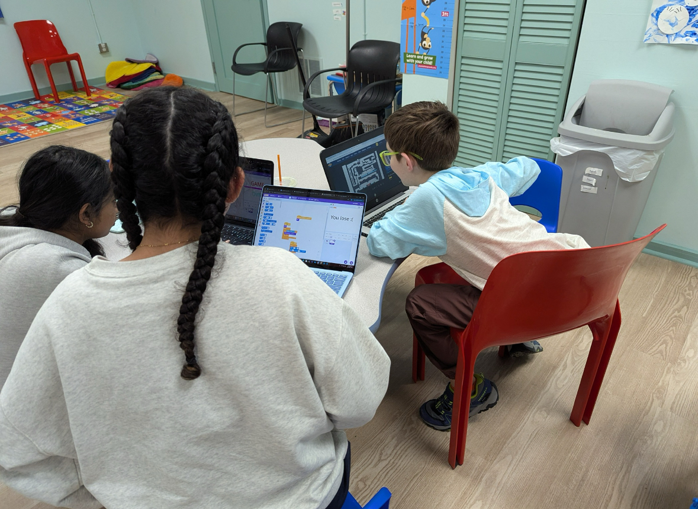
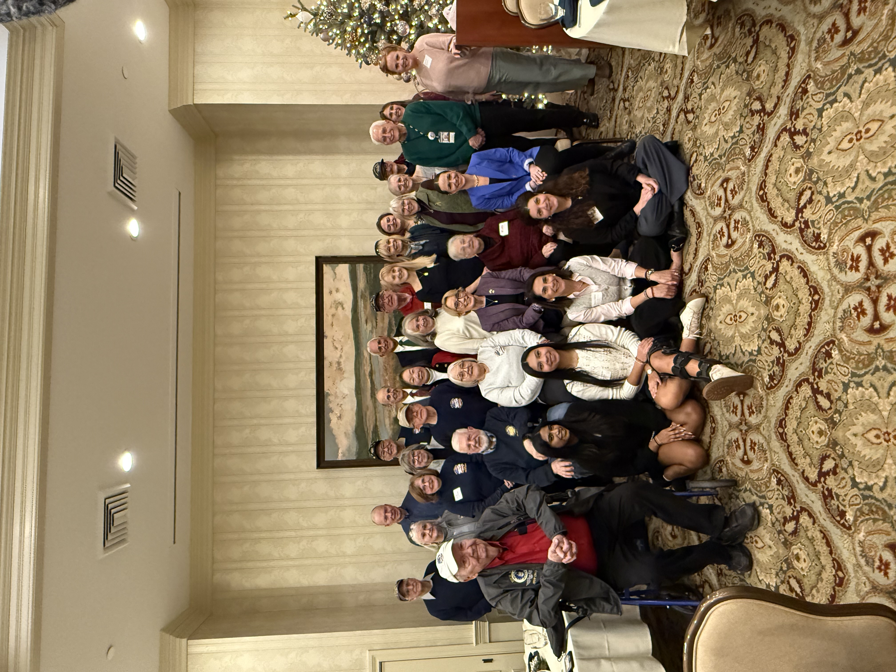
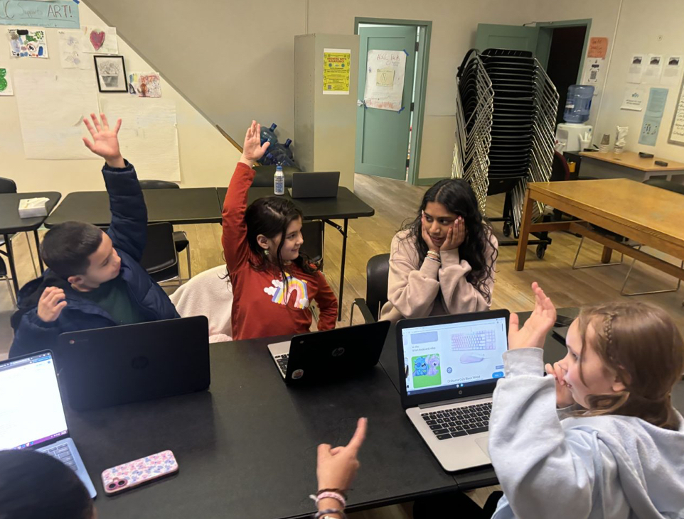

100+
students reached through free, beginner-friendly coding and technology learning opportunities.
Student-led. Community-powered.
Digital Dreamers helps youth build confidence in technology through free classes, mentorship, and real-world projects that turn curiosity into opportunity.

Work in progress
Digital Dreamers is building a thoughtful foundation for accessible, youth-led technology education.
students reached through free, beginner-friendly coding and technology learning opportunities.
workshops and learning sessions designed around building real projects.
core focus areas: workshops, mentorship, and student projects that build confidence over time.

National Recognition
Digital Dreamers co-founders were recognized by U.S. Senator Maggie Hassan for expanding free, youth-led tech education and helping more students see themselves as builders in technology.
Recognition from the Office of U.S. Senator Maggie Hassan
Purpose
We empower youth from underrepresented communities to see themselves as creators, innovators, and leaders in technology.
Workshops make coding approachable with project-based lessons and practical skills.
Dream Match connects students with mentors who guide growth and confidence.
Students build portfolios and leadership skills that open doors to future opportunities.

Programs
Programs designed to spark confidence, creativity, and long-term opportunity.
Interactive classes that teach coding, digital literacy, and problem-solving in a supportive environment.
Learn moreOne-on-one mentorship that helps students set goals, stay motivated, and explore careers in tech.
Learn moreReal-world projects where students apply what they learn and showcase their creativity publicly.
Learn moreLeadership
A youth-driven team committed to making tech education equitable and inspiring.
Co-Founder
Leads partnerships and program strategy to expand Digital Dreamers into more communities.
Co-Founder
Drives curriculum quality and student experience with a focus on confidence and inclusion.
Mentors & Instructors
Our volunteer mentors support students in class, in projects, and in their personal growth journeys.
Community voices
"Digital Dreamers gave my child confidence with technology and a community that truly believes in them."
"Mentoring here is deeply meaningful. Students are curious, creative, and excited to build."
"I used to feel nervous around coding. Now I can build projects and help my classmates too."